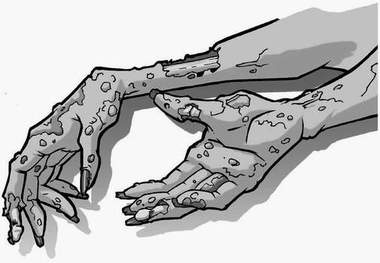

James lay on his stomach on the tarmac and peered down inside the pipe that led to the sewers. The torch was doing little, if anything, to relieve the darkness.
‘Can you see him?’ asked Lenny, hopefully.
‘Who?’ James’s voice echoed eerily from the sewer entrance.
‘Whiskers!’ replied Lenny. ‘Can you see Whiskers anywhere?’
Alexander shone his torch into Lenny’s face. ‘He’ll be long gone by now,’ he said.
‘What?’ muttered Lenny, trying hard to stop his bottom lip from trembling.
‘He’s a rat, Lenny,’ said Alexander. ‘We’ve released him down into the sewers, where he’s surrounded by his own kind. I doubt you’ll be seeing him again.’
‘He’s not coming back?’ asked Lenny, his eyes filling with tears.
Alexander shook his head. ‘What did you think he was? A homing rat?’
‘I just didn’t realise,’ mumbled Lenny as he wiped away his tears. ‘I just thought he’d come back…’
James lifted his head out of the hole and sat up. ‘It’s OK,’ he said, gently. ‘When this is all over, we’ll go down there and look for him. You never know, we might—’ he stopped, suddenly aware of a distant rumbling noise coming from underground. ‘Can you guys hear that?’ he asked.
The noise grew in volume, sounding now like the howl of a strong wind. It was coming from the sewers.
James, Alexander and Lenny leant over the hole, their torches aimed down into the darkness. The noise was a deafening roar now. Something was approaching.
The boys were thrown on to their backs as thousands of ghosts erupted through the manhole and fled up into the air. Slime and sewage rained down as men, women and children raced upwards, screaming in terror at what they had just witnessed.
James lay back on the ground, mouth open in astonishment at the scene he was witnessing. The ghosts whirled around each other, jostling for position as the surge of spirits raced for the clear night sky.
‘Ghosts!’ mouthed Lenny, staring upwards. ‘Th-they’re real.’
‘And they’re scared,’ added Alexander. ‘We’ve done it. They’re leaving!’ He looked from James to Lenny, grinning madly. ‘We did it!’
Soon, the sky was a writhing, swirling mass of spirits. Tortured faces appeared and disappeared among the pulsating mass. Screams echoed into the night.
After a moment, the sky above the school seemed to glow, a flickering light that spread quickly through the collection of ghosts. It grew brighter and brighter—greens, reds and blues shooting from one spectre to another. Then, with a massive boom, the cloud of phantoms exploded, sending trails of light shooting across the sky.
James, Lenny and Alexander lay still, trying to catch their breath.
The first thing William Scroggins noticed when he came round was the wind whistling past his face. He opened his eyes to find himself high above the school, carried along by a flood of ghosts that were screaming up into the cold night air. Something flew past him, knocking into his hand as it sped downwards.
‘SQUEAK!’
The rat! The rat that had started it all. By rights, he should let it fall back to earth and hit the ground hard. It had caused chaos among the plague-pit ghosts, scaring them enough to flee the sewers that had been their home for the past six hundred years.
But he knew the rat was a pet, a friend to the largest of the three boys who had planned this. William knew what it was like to need a friend, so he forced himself round and, pressing his feet against the belly of a particularly large ghost, launched himself down towards the carpark.
He caught up with the rat quickly and managed to grab its tail. It spun round in the air, teeth bared, but calmed down when it saw the kind expression on the boy’s face.
‘It’s OK,’ said William, soothingly. ‘I’ve got you.’ Then a thought struck him. If the rat had been thrown up here with the ghosts, perhaps the bully had been, too. He searched the screaming crowd for a familiar face and spotted Ambrose, trying to free himself from Edith’s terrified clutches.
‘Ambrose!’ he yelled, desperate to make himself heard about the noise. His friend looked up and saw him. ‘The boy!’ shouted William. ‘Find the boy!’ Ambrose nodded and forced his way deep into the seething mass of ghostly bodies.
William concentrated hard for a moment to make himself invisible, then continued downwards.
Lenny clambered to his feet, wiping furiously at the mud and dirt that had rained down
upon them. ‘Hey! What’s that?’ he heard Alexander say.
Lenny looked up to see a dark object falling towards them. Oh, no, not another ghost…
‘SQUEAK!’
‘Whiskers!’ shouted Lenny, and held up his hands to try and catch his pet. The rat changed direction as a gust of wind caught it and Lenny dashed across the car park towards it. He tripped over the discarded manhole cover and crashed to the ground. There was no way he was going to reach Whiskers now; the rat would hit the tarmac right in front of him.
But, at the last moment, Whiskers changed direction again and landed safely in Lenny’s outstretched hands.
‘Incredible!’ muttered Alexander as he watched Lenny cuddle and kiss his pet.
Unseen by everyone but the rat itself, William Scroggins let go of its tail and smiled.
‘Help me!’ screamed a voice from above the boys. James looked up to see a large but familiar shape hurtling back towards the ground.
‘The Gorilla!’ he shouted, grabbing Alexander’s hands to form a cradle. Lenny pushed Whiskers into his school bag and rushed over to join them.
Positioning themselves below the falling bully, the boys leant back, bracing themselves for the impact. High above them, an invisible Ambrose Harbottle tugged hard at The Gorilla’s hair, trying desperately to slow his fall. When Gordon landed, James, Alexander and Lenny collapsed heavily on top of him. The Gorilla quickly leapt to his feet, terrified but unhurt.
‘Where is she?’ he screamed, pulling the leech from his face. ‘The one with the laugh! Keep her away from me!’
James glanced around the playground. ‘There’s no one else here,’ he said. ‘Just us.’
Gordon tried his best to pull himself together. ‘R-right!’ he stammered, pointing at each boy in turn. ‘Don’t you tell anyone about this!’
Alexander stepped up to face him. ‘What’s in it for us?’ he asked.
‘I’ll…I’ll leave you alone!’ Gordon replied. ‘Just keep this quiet.’ And then he ran off across the car park, muttering to himself about ghosts, ghouls and raw sewage.
James took a deep breath, bending down to drag the cover back over the manhole. ‘I don’t know about you two,’ he said, straightening up. ‘But, I’m ready for bed.’
Smiling, Alexander and Lenny gathered their bags and joined their friend as he headed for the school gates and home.
William and Ambrose watched the three boys walk away. ‘I guess things are going to be a little quieter around here from now on,’ said Ambrose, cheerfully.
A hand clamped down hard on to his shoulder. ‘That’s what you think,’ cackled a voice. Edith Codd grinned wickedly as she transformed herself, William and Ambrose into vapour, dragging the two ghosts down through the cracks in the manhole cover and back into the sewer below.
‘I thought we’d finished with the school!’ Ambrose’s voice echoed up into the night air.
‘That’s just where you’re wrong!’ cackled Edith. ‘We haven’t even begun!’
